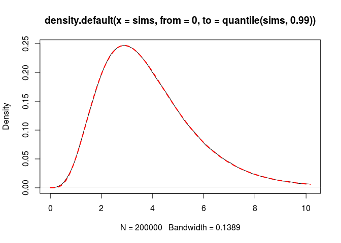

Poisson-Beta, Gamma-Beta, and Poisson-Gamma-Beta distributions
Poisson-Beta distribution
The Poisson-Beta distribution with parameters \(a,b,\theta>0\) is defined as the distribution of a random variable \(N\) such that \[ (N \mid U=u) \sim \mathcal{P}(\theta u), \quad U \sim \mathcal{B}(a,b). \] It is easy to simulate:
rPB <- function(n, a, b, theta = 1){
stopifnot(a>0, b>0, theta>0)
rpois(n, theta * rbeta(n, a, b))
}Thanks to the first integral representation of the Kummer function \({}_1\!F_1\) given here, its probability mass at \(x \in \mathbb{N}\) is \[
\frac{\theta^x}{x!}\frac{B(a+x,b)}{B(a,b)}{}_1\!F_1(a+x, a+b+x; -\theta).
\] The Kummer function \({}_1\!F_1\) is available in the R package gsl. Here is a R implementation of the probabiity mass function of \(\mathcal{P}\mathcal{B}(a,b,\theta)\), vectorized in x:
library(gsl)
dPB <- function(x, a, b, theta = 1){
stopifnot(a>0, b>0, theta>0)
out <- numeric(length(x))
positive <- x >= 0
x <- x[positive]
logC <- lbeta(a+x,b) - lbeta(a,b) - lfactorial(x) + x*log(theta)
H <- hyperg_1F1(a+x, a+b+x, -theta)
out[positive] <- exp(logC)*H
out
}Let’s check:
a <- 10; b <- 5; theta <- 2
nsims <- 200000
sims <- rPB(nsims, a, b, theta)
sum(sims <= 3) / nsims
## [1] 0.94941
sum(dPB(0:3, a, b, theta))
## [1] 0.9499529Gamma-Beta distribution
The Gamma-Beta distribution with parameters \(\nu, a, b, \theta > 0\) is defined as the distribution of a random variable \(X\) such that \[ (X \mid U=u) \sim \mathcal{G}(\nu, \theta u), \quad U \sim \mathcal{B}(a,b), \] where the second parameter of the Gamma distribution \(\mathcal{G}\) is its rate parameter, not the scale parameter.
Let’s write a sampler for this distribution:
rGB <- function(n, nu, a, b, theta=1){
stopifnot(nu>0, a>0, b>0, theta>0)
rgamma(n, shape = nu, rate = theta*rbeta(n, a, b))
}Equivalently, the \(\mathcal{G}{B}(\nu,a,b,\theta)\) distribution is the distribution of the quotient \(Y/U\) where \(Y \sim \mathcal{G}(\nu,\theta)\) is independent of \(U \sim \mathcal{B}(a,b)\). Thus this is also the distribution of \(\frac{Y/U}{\theta}\) where \(Y \sim \mathcal{G}(\nu,1)\) is independent of \(U \sim \mathcal{B}(a,b)\), and then this is a scaled confluent hypergeometric function kind one distribution (the distribution of \(Y/U\)). As far as I know, this name firstly occurs in the book Matrix variate distributions by Gupta and Nagar, who studied the matrix-valued confluent hypergeometric function kind one distribution. In the paper Properties of Matrix Variate Confluent Hypergeometric Function Distribution, Gupta & al. more deeply study this distribution. Moreover they introduce a scale parameter in this distribution. With their notations, \[ \mathcal{G}\mathcal{B}(\nu, a, b, \theta) = CH_1(\nu, a+\nu, a+b+\nu, 1/\theta), \] that is, \[ CH_1(\nu, \alpha, \beta, \theta) = \mathcal{G}\mathcal{B}(\nu, \alpha-\nu, \beta-\alpha, 1/\theta). \] The constraints on the parameters of \(CH_1(\nu, \alpha, \beta, \theta)\) are \(\nu>0\), \(\alpha>\nu\), \(\beta \geqslant \alpha\) and \(\theta > 0\). Thus it is not more general than the \(\mathcal{G}\mathcal{B}\) distribution, except for the case \(\beta = \alpha\). We will see that it is a Gamma distribution in this case. The condition \(\beta \geqslant \alpha\) is not mentionned in the literature; Gupta & Nagar, Gupta & al., wrote \(\beta > \nu\). However the density function they give is a positive quantity multiplied by \({}_1F_1\left(\alpha, \beta; -\frac{x}{\theta}\right)\), which can take negative values when \(\beta < \alpha\).
The density function of \(\mathcal{G}{B}(\nu,a,b,\theta)\) at \(x \geqslant 0\) is, thanks to this integral representation of the Kummer function \({}_1\!F_1\), \[ \theta^\nu \frac{\Gamma(a+b)}{B(a,\nu)\Gamma(a+b+\nu)}x^{\nu-1} {}_1\!F_1(a+\nu, a+b+\nu; -\theta x). \] Indeed, this expression makes sense for \(b = 0\). One has \({}_1\!F_1(\alpha, 0; -\theta x) = \exp(-\theta x)\), and thus we get the density of \(\mathcal{G}(\nu, \theta)\) when \(b=0\). This is not suprising because \(\mathcal{B}(a,b) \to \delta_1\) when \(b \to 0^+\).
Thanks to the identity \[ {}_1\!F_1(a+\nu, a+b+\nu; -\theta x) = \exp(-\theta x) {}_1\!F_1(b, a+b+\nu; \theta x), \] we can easily see that the density function is indeed positive.
Now let’s implement this density in R:
dGB <- function(x, nu, a, b, theta = 1){
stopifnot(nu > 0, a > 0, b >= 0, theta > 0)
if(b == 0){
return(dgamma(x, shape = nu, rate = theta))
}
out <- numeric(length(x))
positive <- x >= 0
x <- x[positive]
nu_eq_1 <- rep(nu == 1, length(x))
log_x_power_nu_minus_one <-
ifelse(nu_eq_1, 0, (nu-1)*log(x))
C <- exp(-lbeta(a,nu) - lnpoch(a+b,nu) +
log_x_power_nu_minus_one + nu*log(theta))
d <- ifelse(C == Inf, # occurs when x=0 and nu < 1
Inf, C*hyperg_1F1(a+nu, a+b+nu, -x*theta))
out[positive] <- d
out
}Let’s check:
nu <- 5
sims <- rGB(nsims, nu, a, b, theta)
plot(density(sims, from = 0, to = quantile(sims, 0.99)))
curve(dGB(x, nu, a, b, theta), add = TRUE,
col = "red", lwd = 2, lty = "dashed")
Now, let’s derive the cumulative distribution function of \(\mathcal{G}\mathcal{B}(\nu, a, b, \theta)\). We have to derive the integral \[ I = \int_0^q x^{\nu-1} {}_1\!F_1(a+\nu, a+b+\nu; -\theta x) \, \mathrm{d}x. \] It is known that \[ \int_0^q x^{\nu-1} {}_1\!F_1(a, b; cx) \,\mathrm{d}x = \frac{q^\nu}{\nu} {}_2\!F_2(a, \nu; b, \nu+1; cq). \] Therefore, \[ I = \frac{q^\nu}{\nu} {}_2\!F_2(a+\nu, \nu; a+b+\nu, \nu+1; -\theta q). \]
There is no solid implementation of the generalized hypergeometric function \({}_2\!F_2\) in R. To evaluate it, we use its double integral representation \[ {}_2\!F_2(a_1, a_2; b_1, b_2; z) = \frac{\Gamma(b_1)}{\Gamma(a_1)\Gamma(b_1-a_1)} \frac{\Gamma(b_2)}{\Gamma(a_2)\Gamma(b_2-a_2)} \times ~~~~~~~~~~~~~~~~~~~~~~~~~~~~~{}\\ \int_0^1\int_0^1 u^{a_1-1}(1-u)^{b_1-a_1-1} v^{a_2-1}(1-v)^{b_2-a_2-1} \exp(zuv)\,\mathrm{d}u\mathrm{d}v, \] valid for \(b_1>a_1>0\) and \(b_2>a_2>0\).
Thus, \[ I = \frac{q^\nu}{\nu} \frac{\Gamma(a+b+\nu)}{\Gamma(a+\nu)\Gamma(b)} \frac{\Gamma(\nu+1)}{\Gamma(\nu)\Gamma(1)} \times ~~~~~~~~~~~~~~~~~~~~~~~~~~~~~~~~~~~~~~~{}\\ \int_0^1\int_0^1 u^{a+\nu-1}(1-u)^{b-1} v^{\nu-1} \exp(-\theta quv)\,\mathrm{d}u\mathrm{d}v. \] We get \[ \Pr(X \leq q) = C \times \int_0^1\int_0^1 u^{a+\nu-1}(1-u)^{b-1} v^{\nu-1} \exp(-\theta quv)\,\mathrm{d}u\mathrm{d}v \] where \[ C = (\theta q)^\nu \frac{\Gamma(a+b)}{B(a,\nu)\Gamma(a+\nu)\Gamma(b)} = \frac{(\theta q)^\nu}{B(a,b)\Gamma(\nu)}. \]
We implement this double integral with the cubature package:
library(cubature)
pGBintegrand <- function(uv, theta, q){
u <- uv[1]; v <- uv[2]
u^(a+nu-1)*(1-u)^(b-1)*v^(nu-1)*exp(-q*u*v*theta)
}
pGB <- function(q, nu, a, b, theta = 1){
stopifnot(nu > 0, a > 0, b >= 0, theta > 0)
if(b == 0){
return(pgamma(q, shape = nu, rate = theta))
}
if(q <= 0) return(0)
if(q == Inf) return(1)
integral_ <-
pcubature(pGBintegrand, c(0,0), c(1,1), theta = theta, q = q)
integral <- integral_$integral
exp(nu*log(theta*q) - lgamma(nu) - lbeta(a,b)) * integral
}
pGB(3, nu, a, b, theta)
## [1] 0.3726581
sum(sims < 3)/nsims
## [1] 0.37207Poisson-Gamma-Beta distribution
The Poisson-Gamma-Beta distribution with parameters \(\nu,a,b,\theta>0\) is defined as the distribution of a random variable \(N\) such that \[ (N \mid X=x) \sim \mathcal{P}(x), \quad X \sim \mathcal{G}\mathcal{B}(\nu,a,b,\theta). \] Equivalently, \[ (N \mid X=x) \sim \mathcal{P}\left(\frac{x}{\theta}\right), \quad X \sim \mathcal{G}\mathcal{B}(\nu,a,b,1). \] The sampler is easy to implement:
rPGB <- function(n, nu, a, b, theta = 1){
stopifnot(nu>0, a>0, b>0, theta>0)
rpois(n, rgamma(n, shape = nu, rate = theta*rbeta(n, a, b)))
}The probability mass of \(\mathcal{P}\mathcal{G}\mathcal{B}(\nu,a,b,\theta)\) at \(k \in \mathbb{N}\) is \[ \theta^\nu\frac{{(\nu)}_k}{k!}\frac{B(a+\nu,b)}{B(a,b)} {}_2\!F_1(a+\nu, \nu+k; a+b+\nu; -\theta), \] which is derived from this identity.
Let’s write a R implementation. The gsl package provides the function hyperg_2F1 which evaluates the Gauss hypergeometric function \({}_2\!F_1\). It works flawlessly when the variable \(x\) is in the interval \([0,1)\). When \(x<0\), we can come down to the case \(x \in (0,1)\) by the Pfaff transformation formula. Our Gauss2F1 function below is an implementation of this procedure.
Gauss2F1 <- function(a,b,c,x){
if(x>=0 && x<1){
hyperg_2F1(a, b, c, x)
}else{
hyperg_2F1(c-a, b, c, 1-1/(1-x)) / (1-x)^b
}
}
dPGB <- function(x, nu, a, b, theta=1, log.p = FALSE){
stopifnot(nu > 0, a > 0, b > 0, theta > 0)
out <- numeric(length(x))
positive <- x >= 0
x <- as.integer(x[positive])
logC <- lnpoch(nu,x) - lfactorial(x) - lbeta(a,b) +
lbeta(a+nu,b) + nu*log(theta)
H <- Gauss2F1(a+nu, nu+x, a+b+nu, -theta)
out[positive] <- if(log.p) logC + log(H) else exp(logC) * H
out
}And let’s check:
sims <- rPGB(nsims, nu, a, b, theta)
sum(sims <= 5) / nsims
## [1] 0.764015
sum(dPGB(0:5, nu, a, b, theta))
## [1] 0.7643542We can write a R function for the cumulative distribution more efficient than taking the sum of the probability masses:
pPGB <- function(q, nu, a, b, theta, lower.tail = TRUE, log.p = FALSE){
if(q < 0){
p <- if(log.p) -Inf else 0
return(if(lower.tail) p else 1-p)
}
stopifnot(nu > 0, a > 0, b > 0, theta > 0)
n <- c(0L:as.integer(q))
logC <- lnpoch(nu,n) - lfactorial(n) - lbeta(a,b) +
lbeta(a+nu,b) + nu*log(theta)
H <- Gauss2F1(a+nu, nu+n, a+b+nu, -theta)
p <- sum(exp(logC)*H)
p <- if(lower.tail) p else 1-p
if(log.p){
log(p)
}else{
p
}
}
pPGB(5, nu, a, b, theta)
## [1] 0.7643542